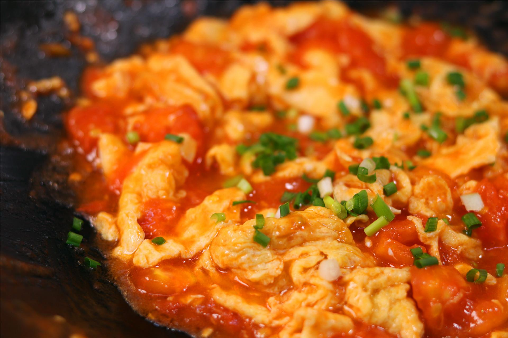

Tomato n Eggs

Tomato and eggs is a popular dish in China said to be so simple that
it tests the skills of even the most accomplished cook.
Ingredients
Amount depends on personal taste and size/shape of ingredients.
Steps
- Cut the tomatoes into small pieces. No need to skin.
- Mix the eggs in a small container.
- Fry the eggs first, putting some salt in. Remove the eggs and wash the pan.
- Cook the tomatoes until it becomes pasty. Add salt. Add the eggs.